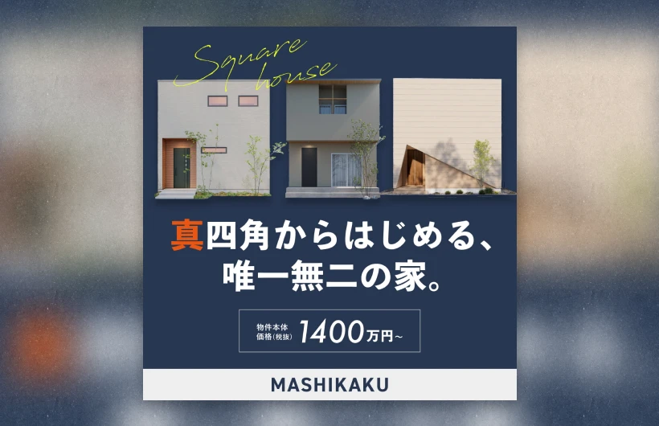

わたしのデザイン帳
MY SCRAPBOOK
by Nachi design
ここに掲載しているデザインやイラストはすべて
丹精込めてつくりあげた
わたしの「お気に入り」です。
自分のつくったものが、誰かを助け、
役に立つものとなるように。
一緒に「お気に入り」を増やしていけるよう、
丁寧に真剣に取り組ませていただきます。
WORKS
制作実績
WEB DESIGN
Webデザイン・サイト制作
デザインからコーディングまで一貫して行います。
ユーザー目線の使い勝手やデザイン性と、運営側目線の保守性やSEO対策を両立したサイトづくりを目指しています。
（※サーバーの新規ご契約、サーバー管理は行っておりません。）
使用可能アプリケーション・言語
Photoshop / Illustrator / XD / figma
HTML / SCSS / JavaScript / Laravel / GitHub / Wordpress


GRAPHIC
グラフィックデザイン
WebサイトやWeb広告で使用するバナーを初め、チラシ・企業パンフレット・名刺などの印刷物も制作経験があります。印刷データの作成、入稿もお任せください。
使用可能アプリケーション
Photoshop / Illustrator / figma / canva
- 
ILLUSTRATION
イラスト制作

透明水彩とiPadで、アナログとデジタルどちらも描きます。 透明水彩では優しいタッチの猫や食べ物、花のイラストを。 デジタルでは猫をキャラクター化したLINEスタンプや、Web・印刷物に使う挿絵、マンガなどを描きます。
使用画材・アプリケーション
透明水彩 / procreate / clip studio paint / canva / adobe fresco / Illustrator / Photoshop
PROFILE
プロフィール
なかむら みすず (nachi)
nakamura misuzu
愛知県出身。大学では教育学部で音楽教育を専攻し、卒業後小学校教諭として4年間勤めました。
Webデザイナーに転身後、様々なジャンルのサイト制作や印刷物のデザインに携わってきました。デザインからコーディングまで一貫して行い、現在6年目になります。
趣味は水彩イラスト、食、旅。
三毛猫の「なちち」と暮らしており、大の猫好きです。猫のイラストを中心に描きます。